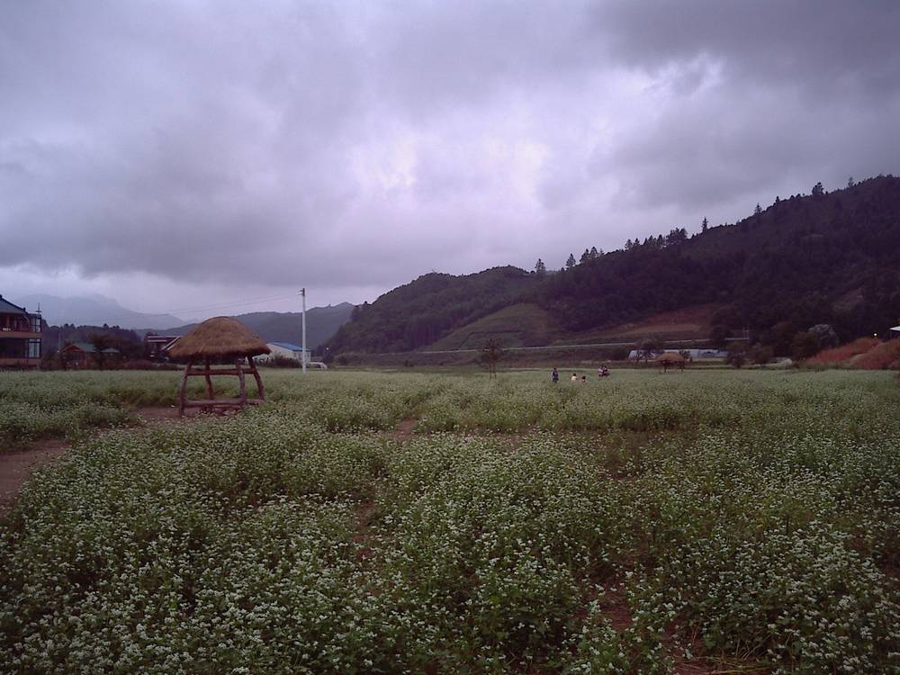

평창군, 봉평 유포리 150MW 태양광 업무협약 앞둬…발전사업 지분으로 군민 기본소득 재원 만든다

10월 운두령 풍력 협약 이어 5일 정상그룹과 협약 예정, 두 사업 모두 2029년 상업운전 목표…군유지 유휴부지·취소된 풍력단지 재개발 검토해 2035년까지 지분 확대, 지분율·배당액은 아직 미정
강원 평창군이 풍력·태양광 발전사업에 지분으로 참여해 배당 수익을 군민 기본소득과 복지 재원으로 돌리는 '재생에너지 소득사업'을 넓혀 간다. 군은 지난달 28일 운두령 풍력과 업무협약을 맺은 데 이어 5일 봉평면 유포리 일원에 들어설 150MW 규모 태양광 발전사업 업무협약을 맺을 예정이며, 두 발전소 모두 2029년 상업운전을 목표로 하고 있다. 군은 또 군유지 가운데 쓰지 않는 땅을 태양광 후보지로 찾고, 허가를 받았다가 취소된 풍력발전단지는 재개발 타당성을 조사해 2035년까지 발전사업 지분을 늘려 갈 계획이다. 다만 태양광 사업에서 군이 가질 지분율과 예상 배당액, 기본소득 지급 대상과 시기는 아직 정해지지 않았고, 협약 뒤에도 인허가와 계통 연결, 사업비 조달을 거쳐야 실제 수익이 생긴다. 유포리 태양광 협약의 상대는 정상그룹으로, 회사의 정식 법인명과 이 회사가 맡을 투자 규모는 알려지지 않았다. 심재국 평창군수는 재생에너지에서 나는 이익이 일부 사업자에게 몰리지 않고 주민 생활에 보탬이 되도록 수익 환원 체계를 갖추겠다고 밝혔다.
시민에너지 관점
지자체가 발전소 지분을 갖고 그 배당을 군민에게 돌리겠다는 구상은 평창의 바람과 햇빛에서 나는 이익을 지역에 묶어 두는 한 방법이다. 독일의 많은 시·군은 지역 공기업(슈타트베르케)을 통해 발전 설비를 직접 소유하고 거기서 나온 이익을 지역 살림에 다시 써 왔다. 지분율과 배당액이 빠진 협약은 말잔치로 끝날 수 있다는 우려가 있는 만큼, 군은 지분 구조와 배분 기준을 사업 초기부터 공개해야 한다. 군 지분에 더해 군민이 직접 출자하고 의결권을 갖는 몫을 함께 설계할 때, 기본소득 재원은 행정의 약속을 넘어 주민의 자산이 된다.
출처: 쿠키뉴스 2026-11-04 전인수 원문 보기
출처: 세계일보 2026-11-04 배상철 원문 보기
출처: 연합뉴스 2026-11-04 임보연 원문 보기
平昌郡、蓬坪・ユポ里の150MW太陽光で業務協約へ…発電事業の持ち分で郡民のベーシックインカム財源づくり
10月の雲頭嶺風力に続き5日にチョンサン・グループと協約予定、両事業とも2029年の商業運転目標…郡有地の遊休地や取り消された風力団地の再開発を検討し2035年まで持ち分拡大、持ち分比率・配当額は未定
韓国江原道の平昌（ピョンチャン）郡が、風力・太陽光発電事業に持ち分で参加し、配当収益を郡民のベーシックインカムと福祉の財源に回す「再生可能エネルギー所得事業」を広げている。郡は先月28日に雲頭嶺（ウンドゥリョン）風力と業務協約を結んだのに続き、5日には蓬坪（ポンピョン）面ユポ里一帯に建設される150MW規模の太陽光発電事業の業務協約を結ぶ予定で、両発電所とも2029年の商業運転を目指している。郡はまた、郡有地のうち使われていない土地を太陽光の候補地として探し、許可を得た後に取り消された風力発電団地については再開発の妥当性を調査して、2035年までに発電事業の持ち分を増やしていく計画だ。ただし、太陽光事業で郡が持つ持ち分比率や予想配当額、ベーシックインカムの支給対象と時期はまだ決まっておらず、協約後も許認可、系統接続、事業費の調達を経て初めて実際の収益が生まれる。ユポ里の太陽光協約の相手はチョンサン・グループで、会社の正式な法人名や同社が担う投資規模は明らかになっていない。シム・ジェグク平昌郡守は、再生可能エネルギーから生じる利益が一部の事業者に偏らず住民の暮らしに役立つよう、収益還元の仕組みを整えると述べた。
市民エネルギーの視点
自治体が発電所の持ち分を持ち、その配当を郡民に回すという構想は、平昌の風と日差しから生まれる利益を地域にとどめる一つの方法だ。ドイツの多くの市や郡は、シュタットベルケと呼ばれる地域の公営企業を通じて発電設備を自ら所有し、そこから得た利益を地域の財政に再び充ててきた。持ち分比率や配当額のない協約は掛け声倒れに終わりかねないとの懸念がある以上、郡は持ち分構造と配分基準を事業の初期段階から公開すべきだ。郡の持ち分に加え、郡民が直接出資して議決権を持つ枠を合わせて設計してこそ、ベーシックインカムの財源は行政の約束を超えて住民の資産になる。
出典: クッキーニュース 2026-11-04 チョン・インス 原文を読む
出典: 世界日報 2026-11-04 ペ・サンチョル 原文を読む
出典: 聯合ニュース 2026-11-04 イム・ボヨン 原文を読む
平昌郡将就蓬坪Yupo里150MW光伏项目签署业务协议…以发电项目股份筹集郡民基本收入资金
继10月云头岭风电协议之后定于5日与Jeongsang Group签约，两个项目均以2029年商业运行为目标…研究利用郡有闲置土地和重新开发已取消的风电场，到2035年扩大股份，持股比例和分红额尚未确定
韩国江原道平昌郡正在扩大"可再生能源收入项目"，即以入股方式参与风电和光伏发电项目，把分红收益用作郡民基本收入和福利资金。平昌郡继上月28日与云头岭风电签署业务协议之后，定于5日就蓬坪面Yupo里一带将建设的150MW光伏发电项目签署业务协议，两座电站都以2029年商业运行为目标。平昌郡还将在郡有土地中寻找闲置地块作为光伏候选地，并对曾获许可后又被取消的风电场开展重新开发的可行性调查，计划到2035年逐步增加发电项目股份。不过，郡在光伏项目中的持股比例、预计分红额以及基本收入的发放对象和时间都尚未确定，签约之后还要经过审批许可、电网接入和项目资金筹措，才能真正产生收益。Yupo里光伏协议的签约对象是Jeongsang Group，该公司的正式法人名称及其将承担的投资规模尚未公开。平昌郡守Sim Jae-guk表示，将建立收益返还机制，使可再生能源产生的利益不集中于少数企业，而是有助于居民生活。
市民能源视角
由地方政府持有电站股份、把分红返还给郡民的构想，是把平昌的风和阳光所产生的利益留在当地的一种办法。德国许多市镇通过被称为"市政公司"（Stadtwerke）的地方公营企业直接拥有发电设施，并把由此获得的利润再投入地方财政。既然有人担心没有持股比例和分红额的协议可能沦为空谈，郡政府就应从项目初期公开股权结构和分配标准。只有在郡的股份之外，同时设计由郡民直接出资并拥有表决权的份额，基本收入的资金才会超越行政承诺，成为居民自己的资产。
来源: Kuki News 2026-11-04 Jeon In-su 查看原文
来源: 世界日报 2026-11-04 Bae Sang-cheol 查看原文
来源: 韩联社 2026-11-04 Lim Bo-yeon 查看原文
Pyeongchang to sign 150 MW solar agreement in Bongpyeong, using power-project stakes to fund a basic income for residents
Agreement with Jeongsang Group due on November 5 follows the Undu-ryeong wind deal in October, with both projects aiming for commercial operation in 2029; county will look at idle county land and cancelled wind farms to expand its stakes by 2035, but its share and expected dividends are not yet set
Pyeongchang County in Gangwon Province is widening a "renewable energy income" scheme under which it takes equity stakes in wind and solar projects and channels the dividends into a basic income and welfare for residents. After signing a memorandum of understanding with the Undu-ryeong wind project on October 28, the county is due on November 5 to sign another for a 150 MW solar project to be built around Yupo-ri in Bongpyeong-myeon, and both plants are aiming to start commercial operation in 2029. The county also plans to look for unused county-owned land as solar sites and to study whether wind farms that were once permitted but later cancelled can be redeveloped, with the goal of increasing its stakes in power projects through 2035. However, the county's share in the solar project, the expected dividends, and who will receive the basic income and when have not yet been decided, and even after the agreement the project must clear permits, grid connection and financing before it earns any revenue. The county's partner in the Yupo-ri solar agreement is Jeongsang Group; the company's full legal name and the size of its investment have not been disclosed. Pyeongchang County Governor Sim Jae-guk said the county would build a system for returning revenue so that profits from renewable energy improve residents' lives rather than being concentrated among a few developers.
Citizen Energy View
A council holding stakes in power plants and passing the dividends to residents is one way to keep the profits of Pyeongchang's wind and sun in the area. Many German towns and districts own generating plants directly through municipal utilities, the Stadtwerke, and put the proceeds back into local budgets. Since an agreement without a stake size or dividend figure risks remaining just words, the county should publish its ownership structure and distribution rules from the start. Only if a share that residents invest in directly and vote on is designed alongside the county's own stake will the basic income fund become residents' own asset rather than an administrative promise.
Source: Kuki News 2026-11-04 Jeon In-su Read the original
Source: Segye Ilbo 2026-11-04 Bae Sang-cheol Read the original
Source: Yonhap News Agency 2026-11-04 Lim Bo-yeon Read the original